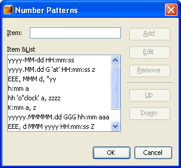

The Locale-Formatting Testing module can format date, message, and number values for the selected locale.
This module uses the java.text formatters, ie
java.text.SimpleDateFormat,
java.text.MessageFormat, or
java.text.NumberFormat
.
You can use this module for quickly testing a date, number, and message pattern.
Using this module is simple. Follow the steps described below:
You can specify the formatting patterns available in the pattern combo boxes.
If you want to edit the message patterns, do the followings step:
In the panel titled as 'Pattern Templates' you can add, edit, remove and reorder formatting templates. In order to modify the template click the button on the right side labeled as '...'.
These formatting templates are used in the combo boxes of the DateFormatting, MessageFormatting, and NumberFormatting tabs of the Locale-Formatting Testing window.
In panel titled as 'Message Arguments Parse Pattern' you can define the date-, and message-pattern used in the MessageFormatting tab for parsing the message arguments as Date, respectively as Number.
You can read more about the supported format patterns :